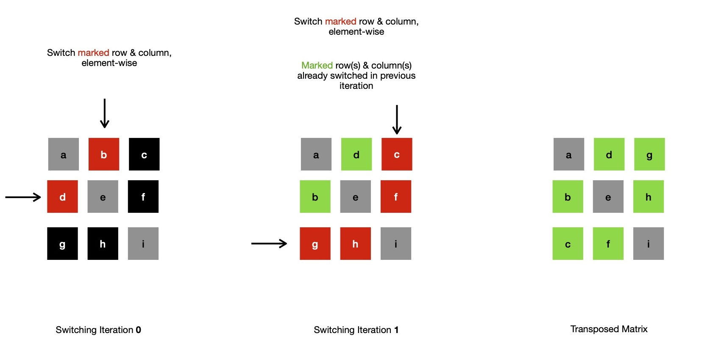
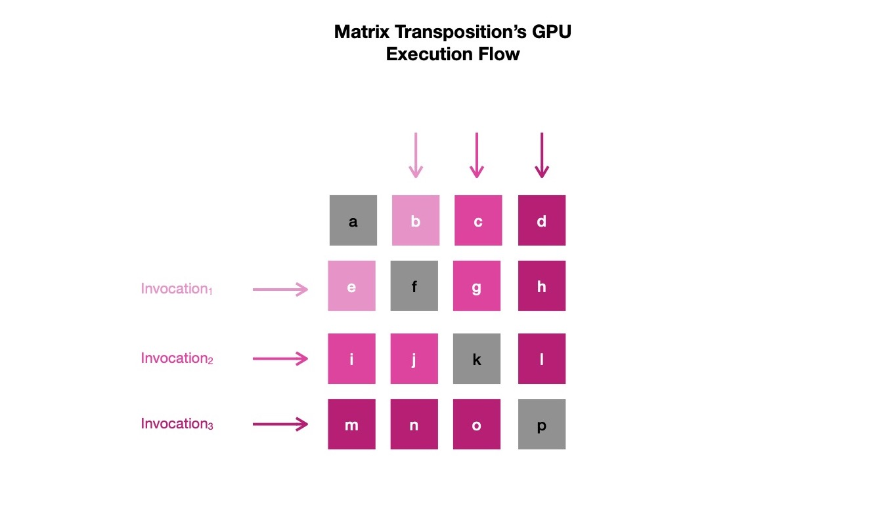

Last week I was exploring Vulkan API for harnessing power of my laptop's integrated graphics card, though mainly interested in Vulkan Compute API so that I can put parallelizable computations on GPU. For easily parallelizable tasks such as matrix multiplication, matrix transposition, matrix & vector multiplication, matrix LU factorization, fast fourier transform etc. where matrix algebra is heavily involved, GPGPU shines. This is due to the fact how GPU computation is architected. For understanding it better, I planned to deep dive by implementing matrix transposition algorithm in both CPU & GPU executable forms. I chose matrix transposition because it's easy to understand & can easily be parallelized, due to absence of dependencies among smaller computations. Also computing on GPU requires copying data between CPU & GPU accessible memories, same applies for matrix transposition where I copy large 2-dimensional arrays between device local ( read GPU memory ) & host ( read CPU memory ) memories.
First I'll take a look at how matrix transposition is computed. Also for sake of simplicity, I use one N x N matrix during demonstration. I don't choose M x N matrix where M != N, because it won't let me perform transposition in-place, calling for further allocating one N x M matrix, which stores transposed form. Notice, elements positioned on matrix diagonal are always unchanged after transposition. Only lower & uppper triangular elements i.e. below & above of matrix diagonal respectively switch their places.
begin:
if i == j:
return
tmp := A[i][j]
A[i][j] = A[j][i]
A[j][i] = tmp
end
If I expand aforementioned algorithm & step through it for a 2 x 3 matrix, I see diagonal elements are always untouched --- they can be simply copied from original to transposed matrix, only remainings are switching their places.
// Generic M x N Matrix Transposition Algorithm
A = [[a, b, c], [d, e, f]] // 2 x 3 matrix original matrix
row := len(A) // read 2
col := len(A[0]) // read 3
B = [[0; row]; col] // 3 x 2 transposed matrix, now only holding zeros
// non-diagonal elements switching places
for i in 0..max(row, col) {
for j in 0..i {
if i < row && j < col:
B[j][i] = A[i][j]
if i < col && j < row:
B[i][j] = A[j][i]
}
}
// diagonal elements simply being copied
for i in 0..col {
for j in 0..row {
if i == j:
B[i][j] = A[i][j]
break
}
}
In a square matrix, it becomes easier because transposition doesn't change matrix dimension, so it's in-place. So I can demonstrate that only switching lower diagonal places of each row with respective upper diagonal portions of column, transposes a N x N matrix.
I can easily parallelize square matrix transposition on CPU, where each worker thread independently performs row/ column switching at cost of employing N-worker threads ( in total ). In that case transposition runs with execution cost of O(N), because each thread needs to switch ~N many elements. Notice, originally matrix transposition is O(N**2) algorithm. It's possible for large matrices that N-many threads can't be employed at same time, so work may be equally distributed among available P-many worker threads in round-robin fashion. In such case execution cost is ~ O(c*N).
My interest is in performing similar parallel transposition on GPGPU using Vulkan API, which requires me to write compute shader ( read code to be run on GPU ). This compute shader is parallelly invoked by Vulkan for each row & within each invocation elements across a row-column pair are switched. If GPU is able to invoke & execute N-many shaders at same time, transposition costs ~O(N). As GPUs are able to do so for quite large N, compared to CPUs, the speedup obtained is noticeably large.
I notice for each parallel invocation of shader code, if row under operation has index I, work group needs to perform I-many switching. Those I-many switching are performed element-wise between first I-many elements of row A[I] & column A[I]. I can express this logic in compute shader code.
const uint idx = row_index; // index of row being operated on
// perform I-many switching between row A[I] & column A[I]
for(uint j = 0; j < idx; j++) {
const int tmp = matrix[idx][j];
matrix[idx][j] = matrix[j][idx];
matrix[j][idx] = tmp;
}
All I need to figure out now is, how to obtain index of row being operated on, which can be easily fetched by reading
gl_GlobalInvocationID.x in OpenGL Shading Language ( read GLSL ), which I make use of
for writing compute shader. I keep full matrix transposition compute shader
here.
With this compute shader, I can ask Vulkan API to dispatch N-many work groups, each of size 32. It denotes graphics card will invoke compute shader 32
times, in parallel, for 32 row indices of matrix under operation. After one work group completes, another starts, again spawning 32 execution threads.
This way N-many work groups are dispatched in total, resulting into invocation of compute shader N x 32 times. I solve for N & dispatch 32 work groups
when matrix has dimension of 1024 x 1024. Notice, none of these invocations are repeating any row of matrix. Also matrix transposition's smaller
computation steps ( read row/ column switching ) are independent of each other, resulting into no use of synchronization techniques to prevent data race.
There may be situations when matrix dimension is not properly divisible by 32, in that case some invocation of shader by Vulkan API
may have gl_GlobalInvocationID.x value >= matrix dimension, which are to be ignored, because no row with certain
index exists in matrix under question & accessing that memory from shader should be illegal.
N x 32 = number-of-rows
Remaining part is making matrix data available to GPU accessible memory, so that it can be accessed by compute shader, which requires
me to bind GPU allocated buffers with descriptors defined in shader. And after computation is done, transposed matrix needs to be read
back by CPU executable code, which requires mapping GPU accessible storage buffer to CPU accessible memory space.
I think setting up Vulkan before computation can be enqueued, is quite verbose, requiring
me to specify every single detail of memory allocation, association of descriptor set & pipeline layout with compiled shader module etc..
Though for sake of simplicity I used vulkano, which is higher level abstraction
over Vulkan API, hiding some complexities, letting me write portions of GPGPU code in Rust. I keep whole implementation
here for future reference.
Finally it's time to transpose randomly generated 1024 x 1024 matrix, where I compute transposition on both GPU, CPU ( sequential ) & assert
result for correctness.
$ cargo build --release
$ ./target/release/matrix_transpose
Device: Intel(R) HD Graphics 5500 (BDW GT2)
Vulkan API: 1.2.0
Queue Count: 1 Compute: true Graphics: true
GPU matrix transpose: 3.994984ms
CPU matrix transpose: 22.005047ms
Transpose asserted: 1.413437ms
In coming days, I plan to explore Vulkan more deeply, while sharing my understanding of how GPGPU can be used for parallelizing computations.
Have a great time !